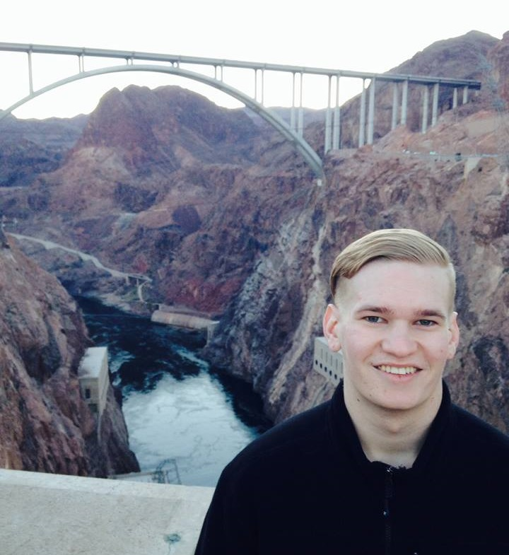

My Name is Brendan Nocis
I am currently studying Visual Communication Design at Eastern Washington University. I am a creative mind, looking for a future that will utilize my talents and keep me doing what I love. I come from a very small town, where this occupation did not even exist. My time in Adna, Washington consisted of small under the table kind of work. Growing up in this environment made me appreciate a good work ethic, and taught me to work with my hands. After being in every art class offered in my high school, I knew that I wanted to figure out some way to work in a creative field. After graduation, I enrolled at Eastern Washington University and my dream career was right here, calling my name. I love this work and take pride in what I do. I have always been an "outside the box" type of thinker, and finding a way to turn that into a career is a dream come true.